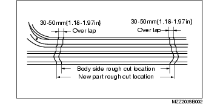
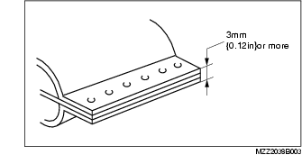
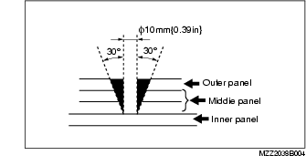
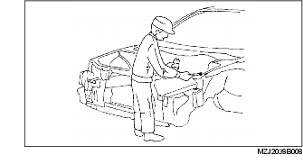

Installation preparations
Rough Cutting of New Parts
• For cut-and-join areas, allow for an overlap of 30-50 mm {1.18-1.97 in} with the remaining area on the body side and then rough-cut the new parts.

Determination of Welding Method
• If the total thickness at the area to be welded is 3 mm {0.12 in} or more, use a CO2 gas shielded-arc welder to make the plug welds.

Making Holes for CO2 Arc Welding
• For places that cannot be spot welded, make a hole for CO2 arc welding using a punch or drill as follows.
(mm {in})
• Grind the shaded section indicated in the diagram below and create a hole in the part where the 3-4 plates are put together. Also, weld the plates together tightly so that gaps do not develop.

Application of Weld-through Primer
• For treatment against corrosion, remove the paint grease, and other material from the portion of new part and body to be welded, and apply weld-through primer.
